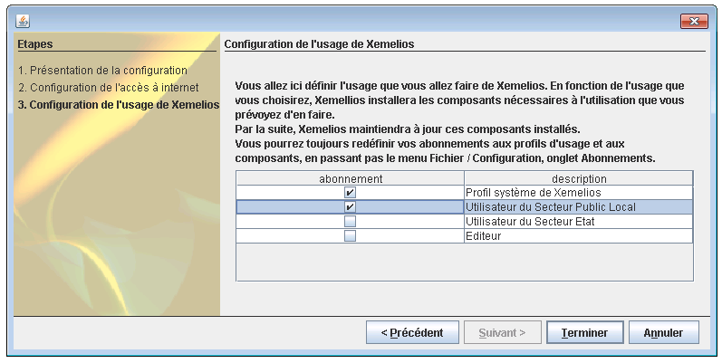

XeMeLios v5 - Documentation d'installation
Table des matières
- Téléchargement de XeMeLios
- Pré-requis
- Lancement du setup
- Premier démarrage
- Abonnements
- Mise à jour de la Base De Données vers la V5
- Si ça ne marche pas
- Désinstallation
1. Téléchargement de XeMeLios
Le programme d'installation de XeMeLios est disponible ici
2. Pré-requis
Pour pouvoir être installé, XeMeLios nécessite plusieurs pré-requis :
- Présence d'une machine virtuelle Java 6 minimum, active par défaut et disponible ici.
- Version de Windows supérieure ou égale à Windows 2000. Windows XP, Windows Vista et Windows Seven sont supportés et Windows 95, Windows 98, Windows Me et Windows NT4 ne le sont plus.
- MySql ne doit pas être installé avant d'effectuer l'installation de la partie Serveur de XeMeLios. Si vous souhaitez installer XeMeLios sur une machine où MySql est déjà installé, veuillez vous reporter à la documentation d'installation de la base de données XeMeLios.
- Aucune version précédente de XeMeLios ne doit être installée. Si vous aviez déjà une version précédente de XeMeLios installée, reportez-vous aux conseils de désinstallation de XeMeLios.
- Pour installer la partie Serveur de XeMeLios, vous devez faire partie du groupe des utilisateurs avec pouvoir, ou être administrateur du poste.
3. Lancement du setup
Après avoir téléchargé le programme d'installation de XeMeLios, il est nécessaire de l'exécuter afin d'installer le logiciel.
Si vous utilisez Windows Vista ou Windows Seven, il se peut que Windows vous demande l'autorisation de lancer le programme.
Il faudra accepter afin de poursuivre l'installation.

Le programme d'installation se lance. Cliquez sur suivant pour poursuivre.
Les termes de la licence de XeMeLios s'affichent. Veuillez les accepter pour avancer dans la procédure d'installation et cliquez sur suivant.
Le choix du type d'installation apparaît
Choisissez alors le type d'installation de XeMeLios que vous souhaitez :
- Installation "complète" : Cette option permet d'installer un serveur XeMeLios et un client XeMeLios permettant d'accéder à ce serveur.
- Installation "client seul" : Cette option n'installe qu'un client XeMeLios, qui se connectera à un serveur précédemment installé sur une autre machine.
Le paramétrage avancé permet de spécifier un port différent pour le serveur MySql de celui par défaut.
Installation complète
Cette option installe un XeMeLios complet, avec un serveur et un client.
Si le Paramétrage avancé n'est pas sélectionné, par défaut le port 3306 est utilisé pour MySql. Sinon, l'utilisateur se voit proposer de choisir un autre port.
Le XeMeLios client est paramétré pour se connecter sur le serveur installé.
Installation client seul
Cette option installe un client seul est installé.
Si le paramétrage avancé est sélectionné, l'utilisateur se voit demander de sélectionner le serveur, le port, le nom d'utilisateur et le mot de passe.
Sinon, seul le nom de serveur sera demandé.
4. Premier démarrage
Lors du premier démarrage, XeMeLios effectue plusieurs contrôles et propose à l'utilisateur un paramétrage adapté.
Serveur
Si le client est lancé sur le serveur, et si l'authentification n'a jamais été paramétrée, XeMeLios proposera de configurer le mode d'authentification.
Si l'utilisateur annule, le lancement de XeMeLios est interrompu.
A tout moment, il est possible de re paramétrer le mode d'authentification, en allant dans le menu Fichier puis Configuration... et enfin onglet Authentification.
Client
Au premier lancement du client, XeMeLios propose un assistant qui permettra de paramétrer l'accès à Internet et les Abonnements.
L'utilisateur, doit obtenir les informations nécessaires auprès de son SAU (Service d'Assistance Utilisateur) et de son Administrateur Réseau.
Avec ses informations, l'utilisateur pourra paramétrer la façon dont XeMeLios accèdera à Internet.
XeMeLios pourra par conséquent récupérer les mises à jour disponibles.
Afin de paramétrer un poste qui est dans le réseau du Trésor, il suffit de cocher le bouton radio Je fais partie du réseau du Trésor.
Les utilisateurs en dehors du réseau du Trésor devront connaître les modalités d'accès à Internet afin de paramétrer l'accès.
5.Abonnements
Le système des mises à jour a été profondément modifié avec la version 5.
Désormais, XeMeLios ne sait pas gérer par défaut les types de document.
XeMeLios propose plusieurs types d'usage, en fonction de profils d'utilisateurs.
Cet écran vous permet de sélectionner le type d'usage que vous comptez faire de XeMeLios, afin que les composants requis soient installés.
Si vous voulez changer, affiner ou supprimer des abonnements; il vous suffira d'aller dans le menu Fichier puis Configuration... et enfin onglet Abonnements.
6. La mise à jour de la base de données.
Une fois l'installation effectuée et le profil d'utilisation défini, le redémarrage de XeMeLios permettra à votre base de données d'être à jour et compatible avec la version 5 tout en gardant vos données importées avec d'anciennes version de XeMeLios.
Attention toutefois, cette mise à jour peut être longue, voire très longue (plusieurs heures, parfois plusieurs jours pour certaines bases exceptionnellement volumineuses).
Cela dépendra des performances de votre ordinateur, de la taille de votre base de données et de la nature des fichiers que vous avez importés.
A ce titre, nous conseillons aux utilisateurs de bases de données volumineuses (plusieurs années de fichiers stockés sans suppressions), de supprimer les données obsolètes ou qui ne sont plus utilisées avant de faire la mise à jour.
XeMeLios proposera également de supprimer certains types de données, si vous le souhaitez.
Il est impératif de ne pas éteindre votre ordinateur et de ne pas fermer XeMeLios pendant cette mise à jour.
7. Si ça ne marche pas
Nous avons essayé de lister les problèmes les plus fréquemment rencontrés.
Ceux-ci seront enrichi au fur et à mesure des remontées des utilisateurs.
XeMeLios est déjà en cours d'exécution
Au premier message, j'ai ce message d'erreur :
XeMeLios interdit désormais que deux instances de XeMeLios s'exécutent en même temps sur le même poste.
Pour contrôler cela, il utilise un port TCP/IP en écoute.
Par défaut, le port sur lequel écoute XeMeLios est le 8973.
Si sur votre poste, ce port est utilisé par une autre application, XeMeLios refusera de démarrer.
Il suffira donc d'indiquer à XeMeLios quel port disponible doit être utilisé.
Modifions ensemble le fichier xemelios.properties et généralement présent dans le répertoire C:\Program Files\DGCP\XeMeLios\XeMeLios\root.
Ce fichier peut s'ouvrir avec le bloc-notes Windows ou tout autre éditeur de texte.
Ajoutons la ligne suivante au fichier : xemelios.isolation.port=8384 où 8384 est le port que vous aurez choisit.
En général, tout port au-dessus de 8100 convient.
Problème de JVM (Java)
Lorsque je lance XeMeLios, j'ai ce message d'erreur :
... et XeMeLios ne se lance pas !
Dans la plupart des cas, cela arrive quand Java 6 est installé, mais que ce n'est pas la version utilisée par défaut.
Il faut soit modifier le paramétrage de Windows pour que Java 6 devienne la version lancée par défaut, soit modifier le script de lancement de XeMeLios.
- La modification du paramétrage de Windows n'est pas un sujet traitable ici. Rapprochez-vous de vos SAU (Service d'Assistance Utilisateur), administrateur Réseau, etc... pour réaliser cette opération.
- La modification du script de lancement de XeMeLios est aisée :
- Tout d'abord il faut savoir où Java 6 est installé. Généralement, il faut chercher dans le répertoire C:\Program Files\Java\jre6
- Ensuite, modifiez le fichier C:\Program Files\DGCP\Xemelios\Xemelios\root\xemelios.bat
- Après, remplacez la dernière ligne START javaw.exe -xms64m -xmx384m -jar xemelios.jar %1% par "C:\Program Files\Java\jre6\bin\javaw.exe" -xms64m -xmx384m -jar xemelios.jar %1% en mettant le chemin noté au point 1.
- Modifiez le fichier C:\Program Files\DGCP\Xemelios\Xemelios\root\viewdoc.cmd
- Remplacez l'avant-dernière ligne start javaw -cp %CP% -Dxemelios.documents.def.dir="%HERE%\documents-def" fr.gouv.finances.cp.xemelios.ui.ViewXemeliosDocument "%1" "%2" par C:\Program Files\Java\jre6\bin\javaw -cp %CP% -Dxemelios.documents.def.dir="%HERE%\documents-def" fr.gouv.finances.cp.xemelios.ui.ViewXemeliosDocument "%1" "%2" en mettant le chemin noté au point 1.
8. Désinstallation de précédentes versions de XeMeLios
Afin de pouvoir installer XeMeLios 5, vous devez préalablement avoir désinstallé les précédentes versions de XeMeLios (V3 et V4).
Vous pouvez cependant conserver votre base de données sans avoir à réimporter toutes vos données (XeMeLios vous le proposera pendant l'installation de la V5).
Si votre base de données est trop volumineuse pour être adaptée au fonctionnement de XeMeLios 5, l'installeur de XeMeLios vous avertira que certaines données devront être supprimées pour pouvoir terminer correctement l'installation de XeMeLios.
Il vous sera alors nécessaire de les réimporter manuellement.
Désinstallation
Le plus simple est de passer par le panneau de configuration puis Ajout/suppression de programme, sélectionnez XeMeLios et enfin faites Modifier/Supprimer.
Ceci désinstallera XeMeLios mais laissera certains fichiers tels que votre base de données.
Les différents raccourcis qui resteront seront supprimés par le programme d'installation de XeMeLios V5.
Suppression des fichiers
Si vous ne souhaitez pas conserver votre base de données, supprimez le dossier C:\Program Files\DGCP
Après les suppressions, pensez à vider la corbeille Windows.